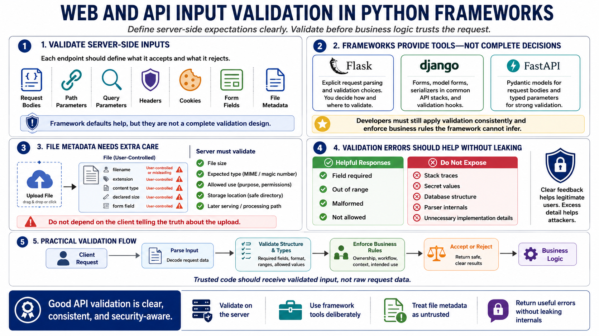

Validating Web and API Input
Connecting to LMS... Progress: in progress

Narration
Web and API input should be validated on the server before business logic acts on it. Request bodies, path parameters, query parameters, headers, cookies, form fields, and file metadata all need expectations. Frameworks can help, but framework defaults are not the same as a complete validation design. The application should define what each endpoint accepts and what it rejects.
Flask applications often require explicit request parsing and validation choices. Django provides forms, model forms, serializers in common API stacks, and validation hooks. FastAPI commonly uses Pydantic models for request bodies and typed parameters. Each framework offers tools, but the developer is still responsible for applying them consistently and enforcing business rules that the framework cannot infer.
File metadata deserves special attention. A filename, extension, content type, declared size, and form field may all be user-controlled or misleading. A server should validate file size, expected type, allowed use, storage location, and how the file will later be served or processed. Validation should not depend on the client telling the truth about the upload.
Validation error messages should be useful without revealing unnecessary internals. A response can say that a field is required, out of range, malformed, or not allowed. It should not expose stack traces, secret values, database structure, parser internals, or implementation details that do not help a legitimate user. Good API validation gives clear feedback while keeping sensitive information out of responses and logs.